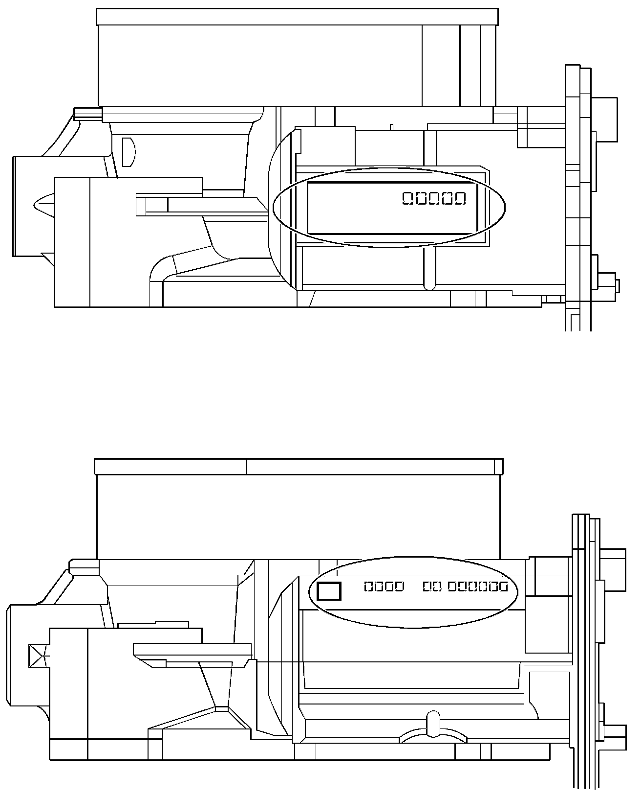
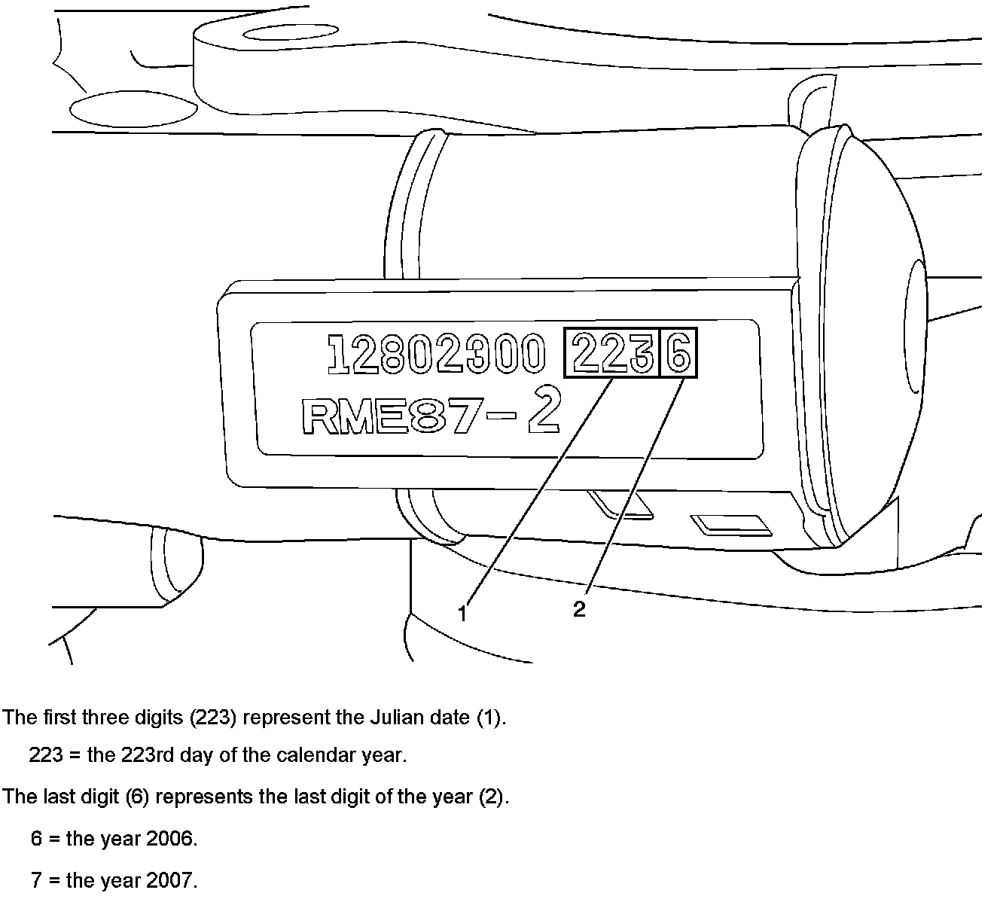
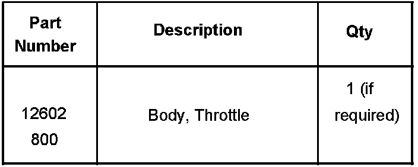
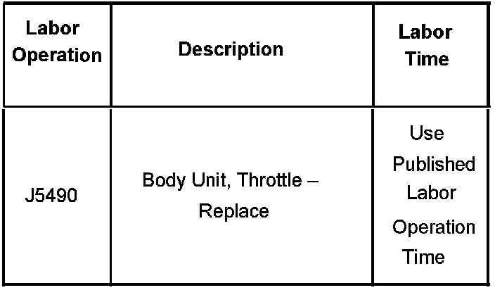

Fuel System - MIL ON/Multiple ECM DTC's Set
Bulletin No.: 07-06-04-032Date: November 15, 2007
TECHNICAL
Subject:
LD8, LH2, L37 Service Engine Soon (SES)/MIL Light Illuminated, "Engine Power Reduced" Message Displayed on Driver Information Center (DIC) with Multiple ECM DTCs P1516, P2101, P2119 or P2176 (Inspect Throttle Body Blade)
Models:
2006-2008 Buick Lucerne
2006-2008 Cadillac DTS
2007-2008 Cadillac SRX, STS, XLR
with 4.6L Northstar(R) V8 Engine (VINs A, Y, 9 - RPOs LD8, LH2, L37)
Condition
Some customers may comment that the MIL/SES light is illuminated and the message "Engine Power Reduced " may be displayed on the driver information center. Technicians may find one or more of the following DTCs stored.
P1516 - Throttle Actuator Control (TAC) Module Throttle Actuator Position Performance
P2101 - Throttle Actuator Position Performance
P2119 - Throttle Closed Position Performance
P2176 - Minimum Throttle Position Not Learned
Cause
This condition may be caused by the throttle blade intermittently sticking in the closed position on some throttle bodies built prior to 2/21/2007.
Correction
Perform normal SI diagnosis for any DTCs that are set. If normal diagnosis doesn't reveal any concerns with the throttle body, inspect the throttle body blade operation using the steps below.
The engine should be at normal operating temperatures with the ignition key in the OFF position. Remove the air cleaner outlet duct. Refer to Air Cleaner Outlet Duct Replacement in SI.
Gently push the bottom half of the throttle body blade inward to the closed position and release. The throttle blade should return to the rest position which is slightly open.
If the throttle blade returns to the rest position by itself, no further action is required. Install the air cleaner outlet duct. Refer to Air Cleaner Outlet Duct Replacement in SI.
If the throttle blade does not return to the rest position, replace the throttle body assembly. Refer to Throttle Body Assembly Replacement in SI.
Inspect Julian Date Code on New Part
Throttle body assemblies with a Julian date code of 0527 or earlier should not be used for service.

Find the 4 digit Julian date code located on the name plate of the new throttle body housing before installation. The name plate may be found in two different areas as shown in the above illustrations.

Example of Throttle Body Name Plate with Date Code 2236

Parts Information
GMSPO has purged the old throttle body stock. However, if using the existing stock from the shelf, another source or an existing ACDelco(R) Regional Warehouse, the Julian date code must be inspected prior to installation.
Warranty Information

For vehicles repaired under warranty, use the table.

Disclaimer